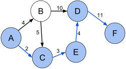

O problema do caminho mais curto passa por encontrar, entre todos os caminhos possíveis entre dois nós de um grafo, aquele cujo custo é menor.
O custo de um caminho é a soma dos pesos das arestas que compõem esse caminho.
Por exemplo (ref):

O caminho mais curto entre A e F é dado pelos nós a azul, e o seu custo é dado por 2+3+4+11=20.
Existem dois caminhos alternativos, ABDF de custo 25, e ABCEDF de custo 27.
Existem diversos algoritmos que permitem obter a solução.
O algoritmo que iremos implementar é a solução proposta por Dijkstra, sendo um algoritmo ganancioso (greedy algorithm).
Este algoritmo tem complexidade O( V2 ) sendo V o número de nós.
Podem visualizar uma explicação do algoritmo neste tutorial:
O seguinte método implementa o algoritmo de Dijkstra usando as funcionalidades da classe Graph.
O método devolve null se não existir um caminho.
/**
* Compute Shortest Path using Dijkstra's greedy algorithm
* @complexity O(V^2)
* @return an array with the indexes of the path, or null if no path exists
*/
public int[] shortestPath(int from, int to) {
int[] costs = new int[size];
for(int i=0; i<size ; i++) // init costs
costs[i] = Integer.MAX_VALUE-1;
costs[from] = 0;
boolean[] visited = new boolean[size];
int visitedNodes = 0;
int[] prev = new int[size];
while(visitedNodes++ < size) {
// select unvisited node with min cost
int min = -1, minCost = Integer.MAX_VALUE;
for(int i=0; i<size ; i++)
if (!visited[i] && costs[i]<minCost) {
min = i;
minCost = costs[i];
}
if (minCost==Integer.MAX_VALUE-1) // no need to continue
break;
for(int succ : sucessors(min))
if (minCost + weight(min,succ) < costs[succ]) {
costs[succ] = minCost + weight(min,succ);
prev[succ] = min;
}
visited[min] = true;
}
// construct array with shortest path
ArrayList<Integer> l = new ArrayList<Integer>();
l.add(to);
while(prev[l.get(0)] != from) {
if (l.size() > size) // something went wrong, no path is possible
return null;
l.add(0, prev[l.get(0)]); // add to begin of list, so the order is from --> to
}
l.add(0,from);
return list2array(l);
}
Com este método podemos saber se dois nós estão conectados entre si:
/**
* Is there a path from 'from' to 'to'?
* @complexity O(V^2)
*/
public boolean isConnected(int from, int to) {
return shortestPath(from, to) != null;
}
Para experimentar tentem resolver o UVa 10514.
Tentem depois resolver alguns problemas desta lista que usam o algoritmo do caminho mais curto.